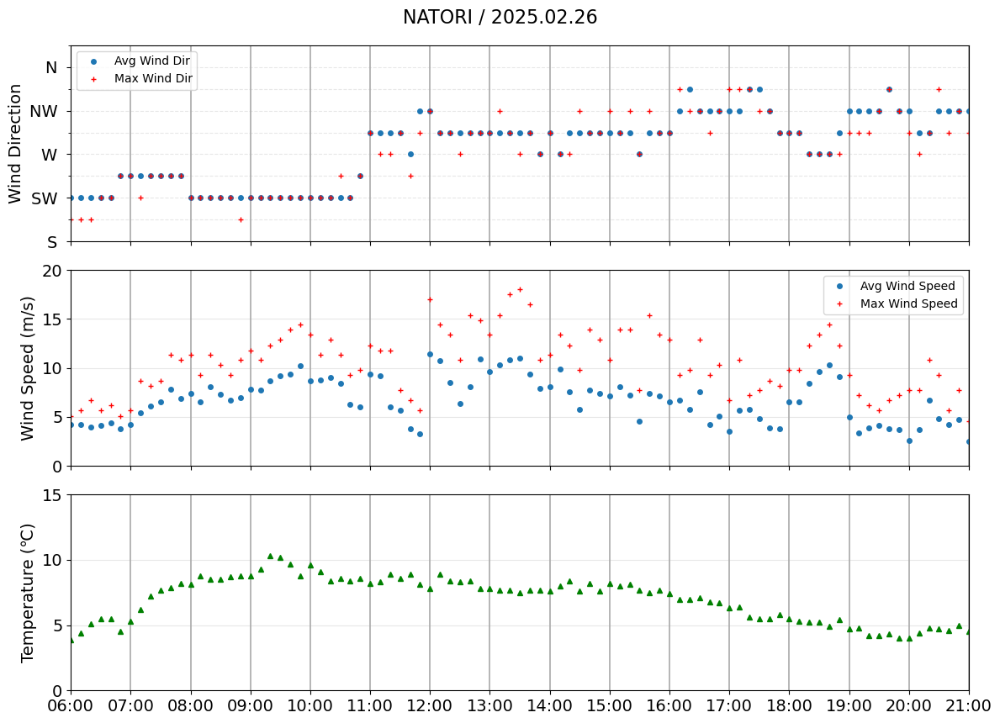

%load_ext autoreload
%autoreload 2
from meteo_lib import PROJECT # または: from meteo_lib.paths import PROJECT
#out_dir = PROJECT / "outputs"
from meteo_lib.meteo_lib import getBlock, get_HourlyData, get_10minData
from meteo_lib.my_path_utils import DATA, OUTimport pandas as pd
import math
import numpy as np
from datetime import datetime, timedelta, date, time
from metpy.units import units
from metpy.calc import dewpoint_from_relative_humidity
import matplotlib.pyplot as plt
import matplotlib as mpl
import matplotlib.dates as mdates
import matplotlib.gridspec as gridspec
from matplotlib.ticker import FuncFormatter, MultipleLocator
import os
from pathlib import Path# 風向を、float配列に変換する
def ary_int_dd(ary):
dic = {'北':16,'北北東':1,'北東':2,'東北東':3,
'東':4,'東南東':5,'南東':6,'南南東':7,
'南':8,'南南西':9,'南西':10,'西南西':11,
'西':12,'西北西':13,'北西':14,'北北西':15, '静穏':np.nan}
awd = np.empty(len(ary),dtype=float)
for ind in range(len(ary)):
val = ary.iloc[ind].replace(' )','')
if val in dic:
awd[ind] = dic[val]
else:
awd[ind] = np.nan
return awd
def DataConversion(df):
ns = df.shape[1]
df['平均風向_dir'] = ary_int_dd(df['平均風向']) * 22.5
df['最大瞬間時風向_dir'] = ary_int_dd(df['最大瞬間時風向']) * 22.5
if ns > 7:
TT = df['気温'].values * units.degC # 気温
RH = df['相対湿度'].values * units.percent # 相対湿度
Td = dewpoint_from_relative_humidity(TT, RH).to('degC')
df['露点'] = Td.magnitude
return df# 追加：方位 → 角度 の辞書
DIR_TO_DEG = {
'N': 360, 'NNE': 22.5, 'NE': 45, 'ENE': 67.5, 'E': 90,
'ESE': 112.5, 'SE': 135, 'SSE': 157.5, 'S': 180,
'SSE': 202.5, 'SW': 225, 'WSW': 247.5, 'W': 270,
'WNW':292.5, 'NW': 315, 'NNW': 337.5
}
def range_from_dirs(start_dir: str, end_dir: str):
"""方位文字列から角度範囲を生成"""
if start_dir not in DIR_TO_DEG or end_dir not in DIR_TO_DEG:
raise ValueError(f"Invalid direction: {start_dir}, {end_dir}")
start = DIR_TO_DEG[start_dir]
end = DIR_TO_DEG[end_dir]
# 例えば N→E なら (0, 90)、S→NW なら (180, 315)
if start <= end:
return (start, end)
else:
# 例: NW → NE (315 → 45) → wrap する場合は360度またぐ
return (start, end + 360)# ===== パラメータ =====
FONTSIZE = 14
ROW_HEIGHT = 3 # ★ 1段あたりの高さを固定（ここを変えると全体バランスが変わる）
# ===== 16方位ラベル =====
dirs16 = ['N','NNE','NE','ENE','E','ESE','SE','SSE',
'S','SSW','SW','WSW','W','WNW','NW','NNW']
def dir_formatter(y, pos):
val = y % 360
i = int((val / 22.5) + 0.5) % 16
return f'{dirs16[i]} '
"""
def dir_formatter(deg, pos):
d = deg % 360
# 0°ラベルは消す
if np.isclose(d, 0.0, atol=1e-6) and deg < 360:
return ''
# 360°は N を表示したい
if np.isclose(deg, 360.0, atol=1e-6):
return 'N'
# 通常の方位ラベル
idx = int(((d / 22.5) + 0.5)) % 16
return dirs16[idx]
"""
def _first_col(df: pd.DataFrame, candidates: list[str]) -> str | None:
for c in candidates:
if c in df.columns:
return c
return Nonedef _unwrap_per_runs(deg_series: pd.Series) -> pd.Series:
"""NaNで分断された連続区間ごとに unwrap する（度→度）。
入力: 度（0-360想定, NaN含む可）"""
vals = pd.to_numeric(deg_series, errors='coerce').mod(360).to_numpy(float)
mask = np.isfinite(vals)
out = np.full_like(vals, np.nan, dtype=float)
# NaNの場所で区切るためのランID
# True/False -> Falseの累積和で「穴」の数を数える
run_id = (~mask).cumsum()
# 連続 True 区間ごとに unwrap
if mask.any():
for gid in np.unique(run_id[mask]):
idx = (mask & (run_id == gid))
rad_seg = np.deg2rad(vals[idx])
out[idx] = np.rad2deg(np.unwrap(rad_seg))
return pd.Series(out, index=deg_series.index, dtype=float)
def prepare_wind(df: pd.DataFrame, sel: str) -> pd.DataFrame:
# sel='JMA' : 平均風向 + (あれば) 最大瞬間風向 を unwrap。表示列(_disp_*)も付与。
# sel!='JMA' : 平均風向のみ unwrap。ガスト系は一切作らない。
df = df.copy()
# --- 平均風向の列名（両者で共通に探す） ---
col_avg = _first_col(df, ["平均風向_dir", "風向_dir", "風向(度)", "風向"])
if col_avg is None:
raise KeyError("平均風向の列が見つかりません（例: '平均風向_dir'）。")
# 平均風向 unwrap
df["wind_unwrap"] = _unwrap_per_runs(df[col_avg])
df["_disp_avg"] = np.mod(df["wind_unwrap"], 360.0)
if sel == "JMA":
# JMA のみ “最大瞬間風向” を探す（無ければスキップ）
col_gust_dir = _first_col(df, ["最大瞬間時風向_dir", "最大瞬間風向_dir", "最大風速風向_dir"])
if col_gust_dir is not None:
df["wind_max_unwrap"] = _unwrap_per_runs(pd.to_numeric(df[col_gust_dir], errors="coerce"))
base = df["wind_unwrap"].to_numpy(float)
cand = df["wind_max_unwrap"].to_numpy(float)
with np.errstate(invalid="ignore"):
aligned = cand + 360.0 * np.round((base - cand) / 360.0)
df["wind_max_unwrap_aligned"] = aligned
df["_disp_max"] = np.mod(df["wind_max_unwrap_aligned"], 360.0)
# gust 列が無ければ何もしない（列自体を作らない）
# sel!='JMA' は何もしない（平均のみ）
return dfdef style_axis(ax, ylabel=None, fontsize=FONTSIZE, hide_xlabels=False):
ax.tick_params(axis='both', labelsize=fontsize)
if ylabel:
ax.set_ylabel(ylabel, fontsize=fontsize)
if hide_xlabels:
ax.tick_params(labelbottom=False)
ax.grid(True, which='both', axis='both', alpha=0.3)
def set_shared_time_axis_all(axes, start, end, fmt='%H:%M', label_interval=2,
grid_interval=1, fontsize=FONTSIZE):
# 複数サブプロットの x 軸を完全共通化。
# - 目盛位置/フォーマッタ/表示範囲は sharex の“親軸”へ一度だけ設定
# - グリッドとラベルサイズは各軸に適用
import matplotlib.dates as mdates
master = axes[-1] # 一番下を親に（ラベルを表示する軸）
# --- 共有対象（limits/locators/formatter は sharex で全軸に伝播） ---
master.set_xlim(start, end)
master.xaxis.set_major_locator(mdates.HourLocator(interval=label_interval))
master.xaxis.set_minor_locator(mdates.HourLocator(interval=grid_interval))
master.xaxis.set_major_formatter(mdates.DateFormatter(fmt))
# --- 見た目（グリッド/ラベル）は各軸で ---
for ax in axes:
# xグリッド（共通のメジャー/マイナーに合わせて描く）
ax.grid(True, which='major', axis='x', linestyle='-', linewidth=1.3, alpha=1.0)
ax.grid(True, which='minor', axis='x', linestyle='--', linewidth=0.8, alpha=0.8)
# xラベルは親だけ表示
is_master = (ax is master)
ax.tick_params(axis='x', labelsize=fontsize, labelbottom=is_master)
def plot_wind_direction(ax, df, sel, fold_to_360=True,
dir_range: tuple[str, str] | None=None):
# dir_range: ('N', 'SE')などの指定があればそれを優先してylimに反映
df = df[df.index.notna()].copy()
# 0° を 360° に統一するヘルパ
def north_to_360(s, tol=1e-3):
# 風向角 s（Series または配列）を 0〜360 に正規化し、
# 0° 付近（±tol）は 360° に寄せる。
if s is None:
return None
# 数値化してコピー
s = pd.to_numeric(s, errors='coerce').astype(float).copy()
# 一応 360 の倍数は全部 360 にそろえる
s = np.mod(s, 360.0) # 0, 360, 720 ... → 0
# s[s == 0.0] = 360.0 # 0 → 360 に統一
# 0° 付近（例えば ±0.001°）を 360° にまとめる
s[np.isclose(s, 0.0, atol=tol)] = 360.0
return s
if fold_to_360:
# y_avg = df["_disp_avg"]
# y_max = df["_disp_max"] if "_disp_max" in df.columns else None
y_avg = north_to_360(df["_disp_avg"])
y_max = north_to_360(df["_disp_max"] if "_disp_max" in df.columns else None)
if dir_range is None:
# 従来どおり 0〜360 を少しはみ出して表示
ylim = (-10, 370)
else:
# 方位指定に基づいて上書き
ylim = range_from_dirs(*dir_range)
else:
y_avg = df["wind_unwrap"]
y_max = df["wind_max_unwrap_aligned"] if "wind_max_unwrap_aligned" in df.columns else None
if dir_range is None: # 指定が無ければ元の計算
yall = pd.concat([y_avg, y_max]) if y_max is not None else y_avg
yall = pd.to_numeric(yall, errors='coerce')
yall = yall[np.isfinite(yall)]
if len(yall):
pad = 15.0
y0 = np.floor((yall.min() - pad) / 22.5) * 22.5
y1 = np.ceil((yall.max() + pad) / 22.5) * 22.5
ylim = (y0, y1)
else:
ylim = (0, 360)
else:
# --- ⬇️ 方位指定に基づく ylim 上書き ---
ylim_deg = range_from_dirs(*dir_range)
ylim = ylim_deg
ax.yaxis.set_major_locator(MultipleLocator(45))
ax.yaxis.set_minor_locator(MultipleLocator(22.5))
ax.yaxis.set_major_formatter(FuncFormatter(dir_formatter))
if sel=='JMA':
lb='Avg'
else:
lb=''
h = []
h += ax.plot(df.index, y_avg, linestyle='None', marker='o',
markersize=4, label=f'{lb} Wind Dir')
if y_max is not None:
h += ax.plot(df.index, y_max, linestyle='None', color='red',
marker='+', markersize=5, label='Max Wind Dir')
ax.set_ylim(*ylim)
ax.set_ylabel("Wind direction (°)")
# 実体がある線だけで凡例
handles, labels = ax.get_legend_handles_labels()
non_empty = []
non_labels = []
for hd, lb in zip(handles, labels):
ydata = getattr(hd, "get_ydata", lambda: np.array([]))()
if np.isfinite(np.asarray(ydata)).any():
non_empty.append(hd)
non_labels.append(lb)
if non_empty:
ax.legend(non_empty, non_labels)
ax.grid(True, which='both', axis='y', linestyle='--')
def plot_wind_speed(ax, df, sel, ws_range):
ws_min, ws_max = ws_range
ax.set_ylim(ws_min, ws_max)
if sel=='JMA':
lb = 'Avg Wind Speed'
else:
lb = 'Wind Speed'
ax.plot(df.index, pd.to_numeric(df['平均風速'], errors='coerce'),
linestyle='None', marker='o', markersize=4, label=lb)
if sel == 'JMA' and '最大瞬間風速' in df.columns:
ax.plot(df.index, pd.to_numeric(df['最大瞬間風速'], errors='coerce'),
linestyle='None', marker='+', markersize=5, color='red', label='Max Wind Speed')
ax.legend()
def plot_temperature(ax, df, sel, include_dewpoint, select_dew, Temp_range):
if sel=='JMA':
# Temp_min, Temp_max = 0, 25
Temp_min, Temp_max = Temp_range
RH_min, RH_max = 30, 100
else:
Temp_min, Temp_max = 7.5, 20
RH_min, RH_max = 30, 100
ax.set_ylim(Temp_min, Temp_max)
ax.plot(df.index, pd.to_numeric(df['気温'], errors='coerce'),
linestyle='None', marker='^', markersize=4,
color='green', label='Temperature')
if include_dewpoint and '露点' in df.columns:
if select_dew==True:
ax.plot(df.index, pd.to_numeric(df['露点'], errors='coerce'),
linestyle='None', marker='v', markersize=4, color='orange',
label='Dew Point')
else:
ax_RH = ax.twinx()
ax_RH.plot(df.index, pd.to_numeric(df['相対湿度'], errors='coerce'),
linestyle='None', marker='*', markersize=4, color='skyblue',
label='Relative Humidity')
ax_RH.set_ylim(RH_min, RH_max)
ax_RH.set_ylabel('Relative Humidity (%)', fontsize=FONTSIZE)
ax_RH.tick_params(axis='y', labelsize=FONTSIZE) # 目盛ラベルも揃える
# --- ここで左右のハンドルを結合し、重複ラベルを除去して一つの凡例に ---
if select_dew==False:
handles, labels = ax.get_legend_handles_labels()
if ax_RH is not None:
h2, l2 = ax_RH.get_legend_handles_labels()
handles += h2
labels += l2
# ラベル重複を除去（同名ラベルは後勝ち）
by_label = dict(zip(labels, handles))
# 外出しで重なり回避
ax.legend(by_label.values(), by_label.keys(),
loc='upper right')
return ax_RH # 必要なら呼び出し側で使えるように返す
else:
ax.legend()
def plot_pressure(ax, df, sel, Press_range):
if sel=='JMA':
P_min, P_max = Press_range
# P_min, P_max = 990, 1031
else:
P_min, P_max = 952, 968.1
ax.set_ylim(P_min, P_max)
ax.set_yticks(np.arange(P_min, P_max, 5))
ax.yaxis.set_major_locator(MultipleLocator(1))
ax.plot(df.index, pd.to_numeric(df['気圧'], errors='coerce'),
linestyle='None', marker='D', markersize=3,
color='purple', label='Local Pressure')
ax.legend()
def plot_station(df, station_name, sel,
include_pressure=False,
include_dewpoint=False,
select_dew=False,
start=None, end=None, savepath=None,
dir_range=None, WS_range=None, Temp_range=None,
Press_range=None, title_date_text=None):
# --- start / end を後で指定する形にする ---
if start is None:
start = df.index.min() # あるいはユーザー指定
if end is None:
end = df.index.max()
# --- 日付表記の自動処理 ---
if title_date_text is None:
# index から自動生成（※ 1点だけなら日付取得可）
try:
dt = pd.to_datetime(df.index[0])
title_date_text = dt.strftime('%Y.%m.%d')
except:
title_date_text = ''
df = prepare_wind(df, sel) # ← ここだけで JMA/非JMA の差を吸収
nrows = 4 if include_pressure else 3
fig, axes = plt.subplots(
nrows, 1, figsize=(12, ROW_HEIGHT * nrows),
tight_layout=True, gridspec_kw={'height_ratios': [1]*nrows}, sharex=True
)
if nrows == 1:
axes = [axes]
ax_dir, ax_wind, ax_temp = axes[0], axes[1], axes[2]
plot_wind_direction(ax_dir, df, sel, fold_to_360=True,
dir_range=dir_range)
style_axis(ax_dir, ylabel='Wind Direction', hide_xlabels=True)
plot_wind_speed(ax_wind, df, sel, ws_range=WS_range)
style_axis(ax_wind, ylabel='Wind Speed (m/s)', hide_xlabels=True)
plot_temperature(ax_temp, df, sel,
include_dewpoint=include_dewpoint,
select_dew=select_dew, Temp_range=Temp_range)
style_axis(ax_temp, ylabel='Temperature (℃)', hide_xlabels=include_pressure)
if include_pressure:
ax_pres = axes[3]
plot_pressure(ax_pres, df, sel, Press_range=Press_range)
style_axis(ax_pres, ylabel='Pressure (hPa)')
set_shared_time_axis_all(axes, start, end, fmt='%H:%M',
label_interval=1, grid_interval=1) # x軸ラベル間隔
fig.suptitle(f'{station_name} / {title_date_text}', fontsize=FONTSIZE+2)
plt.tight_layout(rect=[0, 0.03, 1, 0.99])
if savepath:
plt.savefig(savepath)
plt.show()# ===== データ取得 =====
sel = 'JMA'
#sel = 'Tohoku' # 'JMA' or 'Tohoku Univ'
if sel=='JMA':
year, month, day = 2025, 2, 26 # 対象年月日
start_hour, end_hour = 6, 21 # 描画範囲（時間指定）
pref, station = '宮城県', '名取'
info = getBlock(pref, station)
print(info)
prec, block, st_name = info['prec'], info['block'], info["Name_2"]
df = get_10minData(prec, block, year, month, day)
df = DataConversion(df)
else:
year, month, day = 2025, 3, 26 # 日時固定
start_hour, end_hour = 6, 18 # 描画範囲（時間指定）
fn2 = DATA / "遠刈田中学校AWS-20250326.csv"
data2 = pd.read_csv(fn2, usecols=[1, 2, 3, 4, 5, 6], skiprows=1,
names=['日時', '気温', '相対湿度', '気圧', '平均風速', '平均風向_dir'],
dtype={'気温':'float32', '相対湿度':'float32',
'気圧':'float32', '平均風速':'float32', '平均風向_dir':'float32'},
encoding='cp932')
data2['日時'] = pd.to_datetime(data2['日時'])
df = data2
df = df.set_index('日時')
TT = df['気温'].values * units.degC # 気温
RH = df['相対湿度'].values * units.percent # 相対湿度
Td = dewpoint_from_relative_humidity(TT, RH).to('degC')
df['露点'] = Td.magnitude
st_name = 'Togatta JHS'
outdata = DATA / f"{st_name}_{year}{month:02d}{day:02d}.csv"
outfig = OUT / f"plot250326/{st_name}_{year}{month:02d}{day:02d}.png"
df.sort_index(inplace=True)
df.to_csv(outdata, encoding='shift-jis')
# ===== 作図 =====
# X軸の表示範囲
start = pd.Timestamp(f"{year}-{month}-{day} {start_hour}:00")
end = pd.Timestamp(f"{year}-{month}-{day} {end_hour}:00")
print(start, ' ', end){'prec': 34, 'block': 1464, 'Name_2': 'NATORI', 'Alt': 2.0, 'H_Anemo': 8.2, 'Lat': 38.138, 'Lon': 140.917}
2025-02-26 06:00:00 2025-02-26 21:00:00# まず、ケースごとにパラメータを決める
dir_range = None # 全方位
dir_range = ('S', 'NNE') # 方位表示範囲
WS_range = (0, 20) # 風速表示範囲
Temp_range = (0, 15) # 気温表示範囲
Press_range = (1006,1010) # 気圧表示範囲
if sel == 'JMA':
station_label = st_name
if block > 40000:
include_pressure = True
include_dewpoint = True
else:
include_pressure = False # 常にFalse
include_dewpoint = False
else:
station_label = 'Togatta JHS [Tohoku Univ.]'
include_pressure = True
include_dewpoint = True
# include_dewpoint がTrueで露点または相対湿度を表示、Falseでどちらも非表示
# 決まったパラメータを使って 1 回だけ呼ぶ
plot_station(
df.copy(), station_label, sel,
include_pressure=include_pressure,
include_dewpoint=include_dewpoint,
select_dew=True,
# select_dew がTrueで露点、Falseで相対湿度を表示(include_dewpoint=Trueの場合)
start=start, end=end,
dir_range=dir_range,
WS_range=WS_range,
Temp_range=Temp_range,
Press_range=Press_range,
savepath=outfig,
)